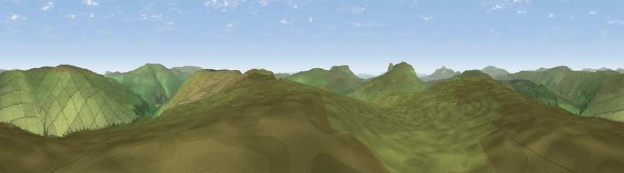

Viewpoint near Buckden
#10498 in England · top 21% of its area beats it · near BuckdenThe view, rendered

A 360° render of this exact spot computed from the terrain model, tree cover and land cover — summer colours, afternoon light, calibrated against photographs of famous viewpoints. Real trees, hedges and buildings will differ in detail.
The panorama
Grey silhouette: terrain skyline in each direction (720 bearings, Earth curvature and refraction included). Dashed green: skyline with trees (+15 m) and buildings (+8 m) as obstacles. Blue strip: how far the ground is visible on each bearing.
Where the view opens
Wedge length = distance to the farthest visible ground on that bearing (vegetation-aware). Rings at 10, 25 and 50 km.
What fills the view
98% grassland · 2% woodland
Angular shares of the visible panorama (visual magnitude), not map area. Landscape diversity 0.05 (0–1 Shannon).
Key numbers
More beautiful places nearby
The staircase of upgrades: each row has a higher view potential than everything closer. Driving times are estimates from straight-line distance, calibrated against real road routing — check an actual route before setting out.
| Place | Direction | Drive | Score |
|---|---|---|---|
| Viewpoint near Buckden | SSE · 1 km | ~4 min | 66.5 |
| Viewpoint near Buckden | SE · 3 km | ~7 min | 67.2 |
| Viewpoint near Horton in Ribblesdale | SW · 5 km | ~10 min | 72.4 |
| Viewpoint c9559_7667 | W · 5 km | ~12 min | 73.3 |
| Pen-y-ghent | SW · 7 km | ~14 min | 75.8 |
| Viewpoint near Buckden | E · 7 km | ~15 min | 77.3 |
| Viewpoint near Ingleton | WSW · 15 km | ~27 min | 79.5 |
| Whernside | WNW · 15 km | ~27 min | 79.9 |
54.19875, -2.17509 · source: screening · position refined by local search. Computed location — check access rights before visiting.